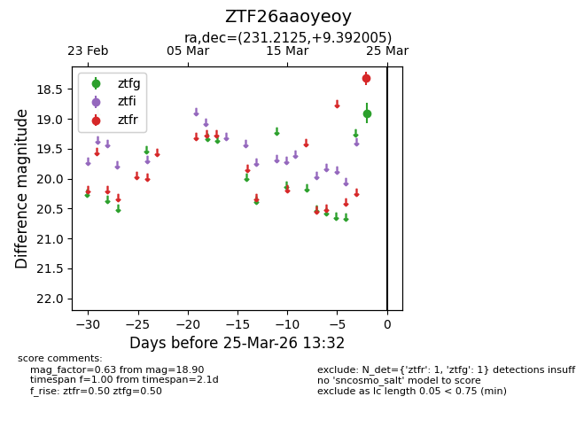
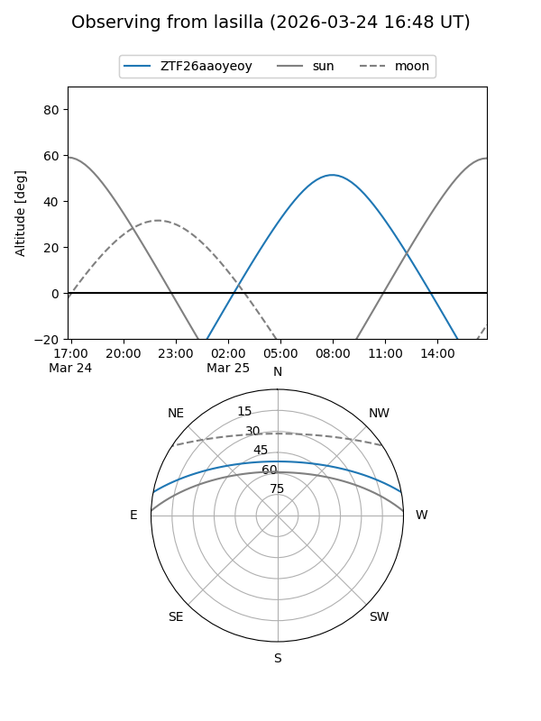
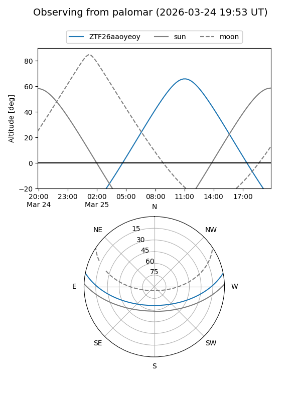

ZTF26aaoyeoy
Target ZTF26aaoyeoy at 2026-03-25 13:34
Aliases and brokers:
FINK: link
Lasair: link
ALeRCE: link
alt names
ZTF26aaoyeoy (ztf,fink_ztf)
Coordinates:
equatorial (ra, dec) = 231.2125,+9.39201
equatorial (HMS+DMS) = 15:24:51.00,+09:23:31.22
galactic (l, b) = (14.2033,+49.72817)
Flags:
Photometry:
last ztfg=18.90, ztfr=18.32
1 ztfg, 1 ztfr detections
Lightcurve

Visibility


Additional plots